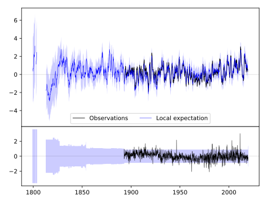
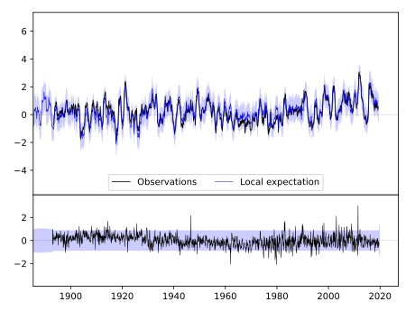
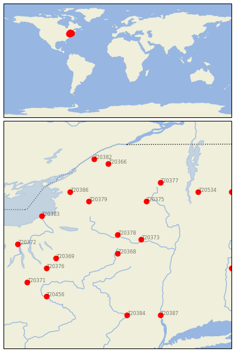

LITTLE FALLS CITY RS [USA]


| Neighbour | Name | Country | Distance | Lon/Lat | Years |
|---|
| 720378 | LITTLE FALLS CITY RS | USA | 0 | -74.9, 43.1 | 1892-2019 |
| 720373 | GLOVERSVILLE | USA | 42 | -74.4, 43.0 | 1892-2019 |
| 720368 | COOPERSTOWN | USA | 44 | -74.9, 42.7 | 1854-2019 |
| 720375 | INDIAN LAKE 2SW | USA | 91 | -74.3, 43.8 | 1892-2019 |
| 720379 | LOWVILLE | USA | 91 | -75.5, 43.8 | 1827-2019 |
| 720369 | CORTLAND | USA | 119 | -76.2, 42.6 | 1892-2019 |
| 720386 | WATERTOWN | USA | 128 | -75.9, 44.0 | 1856-2019 |
| 720383 | OSWEGO EAST | USA | 136 | -76.5, 43.5 | 1844-2019 |
| 720377 | LAKE PLACID 2 S | USA | 142 | -74.0, 44.2 | 1887-2019 |
| 720376 | ITHACA CORNELL UNIV | USA | 145 | -76.4, 42.4 | 1827-2019 |
| 720366 | CANTON 4 SE | USA | 167 | -75.1, 44.6 | 1854-2019 |
| 720534 | CORNWALL | USA | 169 | -73.2, 44.0 | 1887-2019 |
| 720372 | GENEVA RSCH FARM | USA | 172 | -77.0, 42.9 | 1852-2019 |
| 720382 | OGDENSBURG 4 NE | USA | 182 | -75.4, 44.7 | 1838-2019 |
| 720384 | PORT JERVIS | USA | 189 | -74.7, 41.4 | 1880-2019 |
| 720456 | TOWANDA 1 S | USA | 189 | -76.4, 41.8 | 1893-2019 |
| 720371 | ELMIRA | USA | 191 | -76.8, 42.1 | 1852-2019 |
| 720387 | WEST POINT | USA | 203 | -74.0, 41.4 | 1824-2019 |
| 720218 | AMHERST | USA | 210 | -72.5, 42.4 | 1836-2019 |
| 720533 | CHELSEA | USA | 217 | -72.5, 44.0 | 1885-2019 |